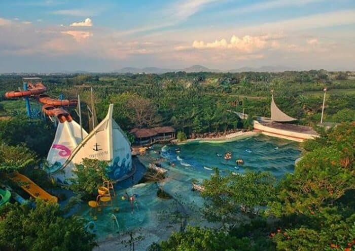
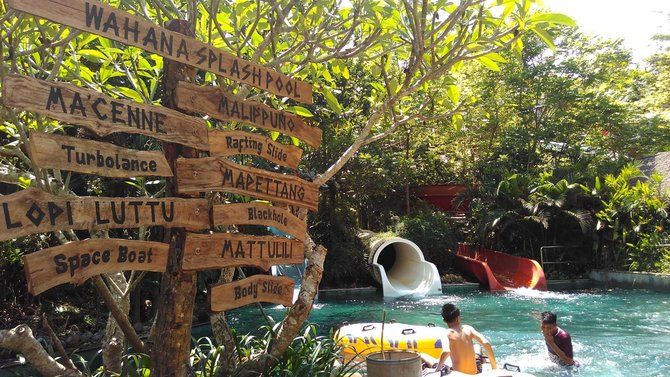

|
Bugis Water Park Adventure jadi salah satu pilihan untuk menghabiskan liburan akhir tahun. Wahana permainan berbasis air yang dibangun di atas lahan seluas 11 hektare di dalam kawasan perumahan Bukit Baruga , jl Raya Baruga No 1, Kelurahan Antang, Kecamatan Manggala ini selalu diserbu warga tiap kali libur panjang. |
 | ||
|  |
Dengan tiket masuk seharga Rp 200.000 per orang, pengunjung bebas menikmati 15 wahana permainan air tersebut. Manajemen Bugis Water Park Adventure menggratiskan tiket masuk bagi pengunjung anak-anak yang tinggi badannya di bawah 80 centimeter. Untuk pengunjung berusia 55 tahun ke atas juga digratiskan. Mengenai harga tiket yang dipatok Rp 200.000 per orang, itu harga khusus liburan natal dan tahun baru mulai 24 Desember hingga 7 Januari. Jika hari biasa, Senin-Jumat harga tiketnya Rp 150.000, khusus Sabtu seharga Rp 180.000 dan hari Minggu Rp 200.000. Bugis Water Park Adventure juga menyuguhkan sisi edukasi. Antara lain tiap tanda atau petunjuk diberi Bahasa Bugis selain Bahasa Inggris. Antara lain wahana freefall atau terjun bebas itu diterjemahkan dengan bahasa bugis Matanre atau ketinggian, Blackhole diberi nama Mapettang atau gelap. |
||